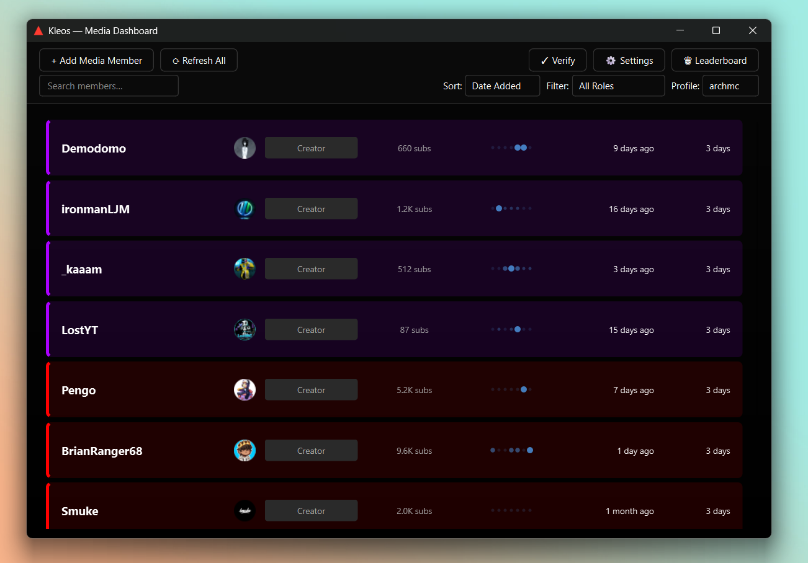
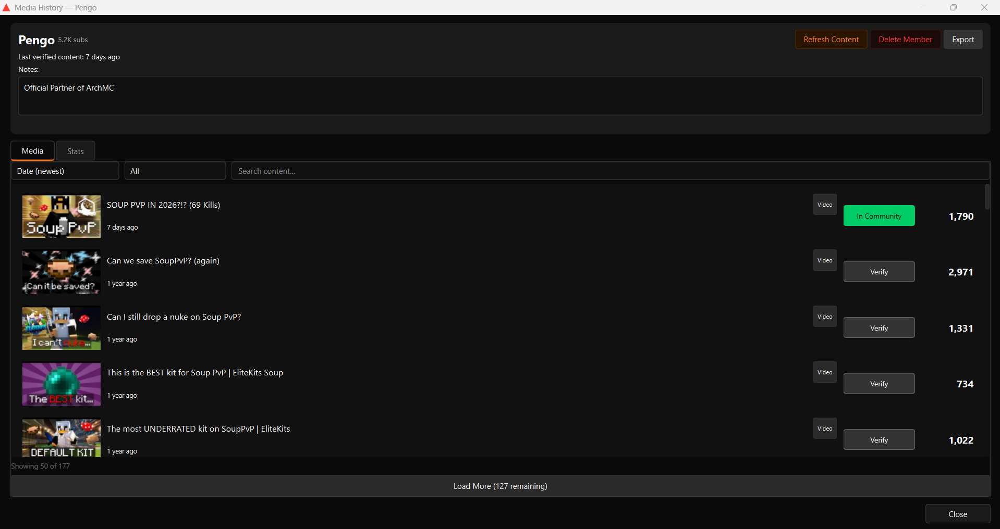
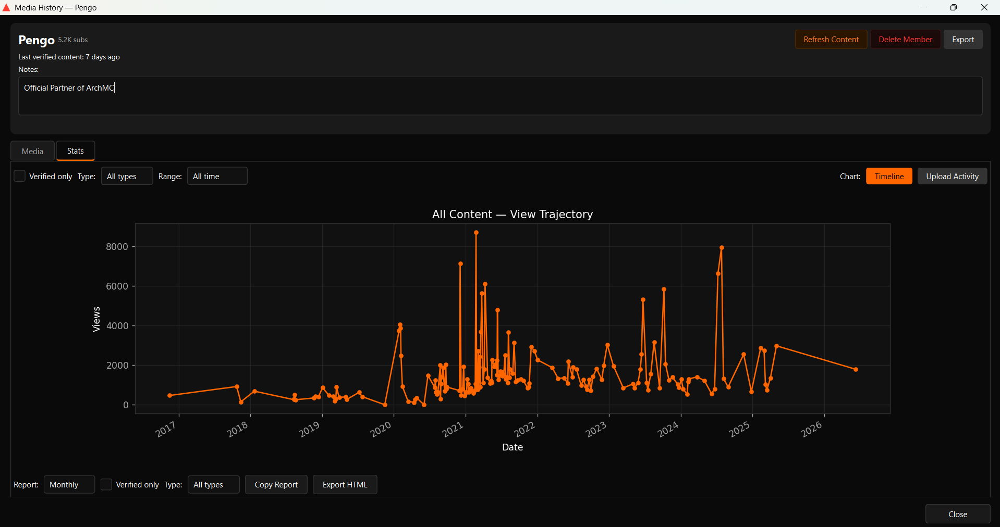
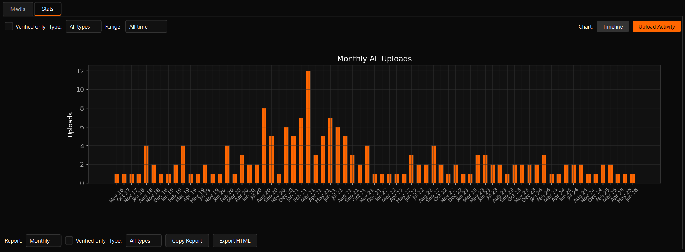
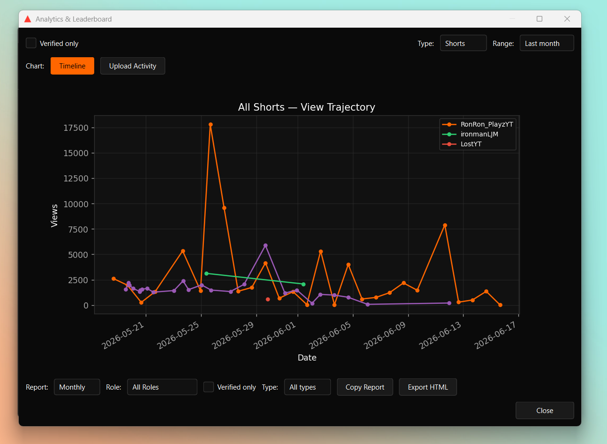

Kleos is a desktop dashboard for community managers who are tired of spreadsheets. Pull YouTube and Twitch data into one offline-first panel, verify uploads with AI or keywords, and export clean reports your team can actually read.
If you manage even a dozen creators, you know the drill: open YouTube Studio, open TwitchTracker, open a spreadsheet, paste numbers, forget whose turn it is to post. Kleos pulls public metadata into a local database and gives you one place to see who is active, what is verified, and how the whole community is trending.
No cloud account. No monthly fee. Just a clean dashboard that works after the first fetch.
Dark app UI, red accents, and charts that actually update when you change a filter.





Free, open-source, and ready for Windows. Want to run it from source? The README has you covered.